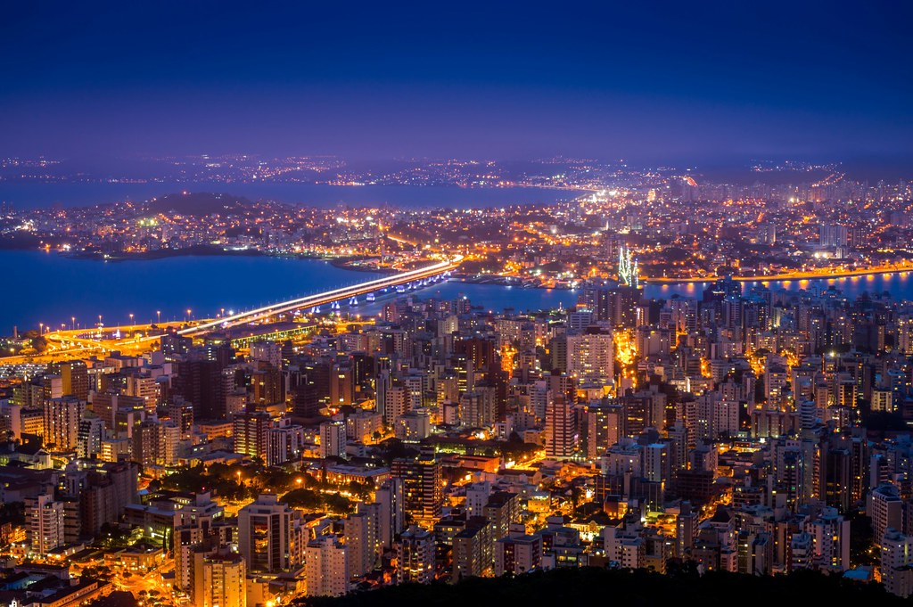
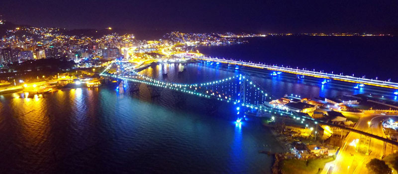

Florianópolis
Florianópolis, capital de Santa Catarina, no Sul do país, está no alto da lista das cidades mais visitadas por estrangeiros no Brasil. A cidade encanta por sua variedade de praias e pela capacidade de agradar todo tipo de público. É uma capital que cresceu em meio à natureza, que oferece belas paisagens naturais por toda sua extensão, onde se pode curtir tanto o movimento de uma capital efervescente quanto a tranquilidade de uma cidade — quase — do interior.

Florianópolis
Conhecida como Ilha da Magia e carinhosamente chamada de Floripa, ela tem cerca de 500 mil habitantes e em torno de 54 km de Norte a Sul. Cada pedacinho de Florianópolis tem uma característica distinta, sendo sempre sua principal atração a Natureza, em suas mais diversas formas, especialmente através do mar e suas montanhas.
Florianópolis tem praias maravilhosas, muitas vezes com águas cristalinas, tem diversas trilhas, muitas delas terminando em praias desertas — quase um troféu dado a quem se encoraja a caminhar. Já ouviu falar da famosa Jurerê? Não é a principal praia em beleza, mas está entre as mais badaladas praias do Brasil, com festas que fervem no verão!
E é do mar, cenário presente a todo momento, que sai também a mais popular produção do estado, a de ostras. Ostras, camarões, polvo e peixes, como a tainha, são a marca dos restaurantes locais, vários deles com uma vista lindíssima para o mar e comida fresquinha!
O que fazer em Florianópolis
Há bastante coisa para ver e fazer em Florianópolis. Na região central, uma boa pedida é fazer um passeio pela Beira-Mar Norte, onde se pode admirar um lindo fim de tarde e a Ponte Hercílio Luz, cartão-postal da capital. Também no centro, vale a pena conhecer o Mercado Público, com ótimos locais para beber entre amigos e petiscar.
Curtir a praia Praia Mole, descer as dunas da Joaquina, fazer um passeio de barco pela Costa da Lagoa, passar um fim de tarde na Lagoa da Conceição, praticar esportes ao ar livre, visitar vilas açorianas — que têm uma cultura muito forte no Estado — estão entre as principais atrações de Florianópolis. Para quem curte ficar ao ar livre, a lista de atividades na cidade não tem fim!
Ao sul da ilha, onde as águas são mais geladas, um dos grandes atrativos é a Ilha do Campeche. Digna de transparência caribenha, a pequena praia da ilha é de tirar o fôlego tamanha sua beleza! Leia outras dicas do que fazer em Florianópolis!
Praias de Florianópolis
Costumam dizer que existem 42 praias em Florianópolis, mas há quem garanta que esse número é ainda maior. Gosta de pegar uma onda? Pode ir pra lá sem pestanejar! Não gosta de mar agitado e prefere águas calminhas? Pode ir também. Florianópolis realmente tem todos os tipos de praias: desertas, supermovimentadas, com dunas, com muito verde, praias para quem quer surfar, praias calmas para crianças e por aí vai. Com tantas opções, será difícil escolher uma praia preferida.

Entre as praias mais procuradas pelos visitantes estão Jurerê Internacional, famosa por suas baladas, a extensa Praia dos Ingleses, a Praia Brava, que tem ondas fortes, além da Praia Mole e Praia da Joaquina que são bastante procuradas pelo público jovem e por quem quer surfar. No Sul de Florianópolis, a Praia do Campeche e a Ilha do Campeche
Lembre-se, no entanto, que Florianópolis tem muito mais praias e pode haver uma opção que se encaixe melhor em seu gosto — veja aqui as dicas completas das praias de Florianópolis.
Ilha do Campeche
Localizada ao Sul de Florianópolis, a Ilha do Campeche está próxima da Praia do Campeche e pode ser conhecida através de um trajeto de barco ou lanche. A ilha faz parte de uma unidade de conservação, por isso tem um número de visitantes limitados por dia. A praia do lugar é belíssima e você também pode aproveitar o passeio para fazer trilhas com um guia, para conhecer a área menos explorada da Ilha do Campeche e também admirar inscrições rupestres.
Hotel em Florianópolis - onde ficar na ilha
Os hotéis em Florianópolis têm a vantagem de geralmente oferecem um bom custo-benefício e estarem espalhados por diferentes bairros da cidade, atendendo a gostos bem variados.
Como chegar em Florianópolis
Após várias reformas e grande investimento, a capital catarinense recebeu o novo e moderno Floripa Airport, ou simplesmente Aeroporto de Florianópolis, principal aeroporto de Santa Catarina. Ele é considerado atualmente um dos melhores aeroportos do Brasil e recebe voos de diversas cidades do país. Confira aqui nossas dicas de passagens para Florianópolis.

Quando ir a Florianópolis - melhor época
Para quem quer conhecer a cidade a pleno vapor, a melhor época em Florianópolis é o verão, que é quando as praias e o clima são mais quentes. Nesse período você também poderá curtir festas e agito em Jurerê, por exemplo, ou se preferir, ainda encontrará algumas praias mais vazias.
Tenha paciência ao viajar no verão porque os engarrafamentos no fim do dia, ao sair das praias, podem ser grandes. Leia aqui todas as dicas de quando ir a Florianópolis.
Informações básicas de Florianópolis
Estado: Santa Catarina
População: 508 mil habitantes
Aeroporto mais próximo: Aeroporto de Florianópolis (FLN)
Cidades próximas:
Prefeitura de Florianópolis